x <- 5
y <- "string"
x*2[1] 10print(y)[1] "string"Course website: https://hannahmetzler.eu/R_intro/
x <- 5
y <- "string"
x*2[1] 10print(y)[1] "string"rm(list = ls())rnorm(20, mean = 100, sd = 10) [1] 101.37707 102.18003 71.38060 106.98786 107.37140 112.73062 102.18389
[8] 111.87447 87.88360 98.90187 96.86431 112.14934 118.62314 102.55809
[15] 93.37058 96.60154 77.30485 86.87284 89.74619 109.07082?rnorm# install.packages("tidyverse")
library(tidyverse)We’ll try not to hurry, and see how far we get.
Before we create our first R-project, we need to talk about how to name files and folders, and how the file system and file paths on your PC work, and how you navigate your way through it.
data_file.csv_) to separate parts of the file name, and dashes (-) to separate words in a section "data_questionnaire_2021-11-15.xls"Data (Participants) 11-15.xlsfinal report2.docParticipants Data Nov 12.xlsproject notes.txtQuestionnaire Data November 15.xlsreport final.docreport final 2.doc_project-notes.txtdata_participants_2021-11-12.xlsdata_participants_2021-11-15.xlsreport_v1.docreport_v2.docreport_v3.doc/Users/UserName/
~ shortcut for it/Users/UserName/Desktop/datafile.csv~/Desktop/datafile.csv~/AnalysisProjects/cd change directory.. move one directory upwards/ to divide subfolders: directory/subdirectory/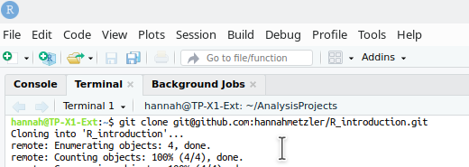
What is the file path for an imaginary file.csv in your Documents folder?
| Where | Example |
|---|---|
| on the web | “https://hannahmetzler.eu/R_intro/Lesson_2/data/datafile.csv” |
| in the working directory | “datafile.csv” |
| in a subdirectory | “data/datafile.csv” |
pwd (print working directory) in the Terminal shows you the directory you are currently in.Terminal
We will now create a remote repository on Github, copy it to our local PCs, and then continue Lesson 2 in that local repository (=directory/folder).
New on the top left.Create repository: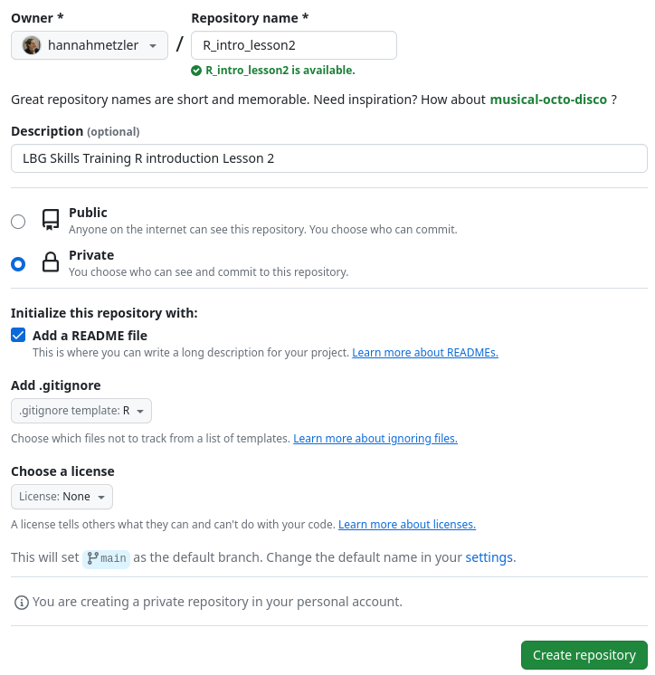
README.md: where you describe the project (folder structure, content, etc.).gitignore: Hidden file that tells Git what not to upload to GitHub (e.g., figures)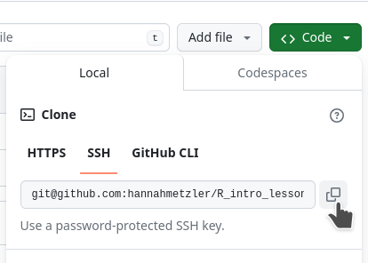
cd. (I want it in my folder AnalysisProjects)git clone and paste your repository link: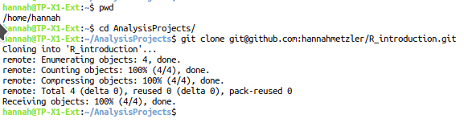
There is now a folder with the name of the remote repository in the directory you “cloned” it to. (For me, in the AnalysisProjects/ folder.) In that folder, let’s start our first R-project!
Create a project... under the File menu.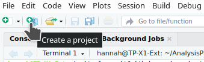
Existing DirectoryBrowse to navigate to our folder R_intro_lesson_2 and click Create Project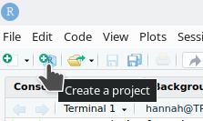
From now on, you can double click this Rproject file in your R_intro_lesson2 folder to directly open Rstudio in this folder.
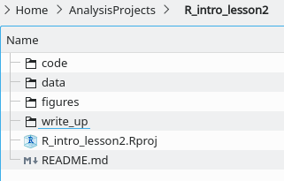
Create these subfolders:
Download this data file from the course website and put it into the data folder.
We can now back up the project and data to a “remote repository” on GitHub.
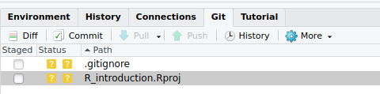
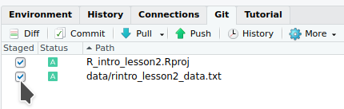
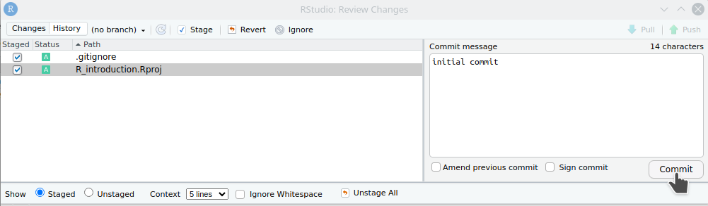
We will finally start coding!
File (top left)rintro_lesson2Ctrl+Shift+C Cmd+Shift+CCtrl + EnterCtrl + Shift + EnterWrite and run the code below:
## LOAD PACKAGES ####
library(tidyverse)read_csv()."data/pets.csv"col_types = "cffiid" defines the type of variable - we will get to this below.## READ IN DATA AND ORGANIZE ####
# Read in data
data = read_csv("data/pets.csv", col_types = "cffiid")The first and last rows of the data frame:
| id | pet | country | score | age | weight |
|---|---|---|---|---|---|
| S001 | dog | UK | 90 | 6 | 19.78932 |
| S002 | dog | UK | 107 | 8 | 20.01422 |
| S003 | dog | UK | 94 | 2 | 19.14863 |
| S004 | dog | UK | 120 | 10 | 19.56953 |
| S005 | dog | UK | 111 | 4 | 21.39259 |
| S006 | dog | UK | 110 | 8 | 21.31880 |
| id | pet | country | score | age | weight |
|---|---|---|---|---|---|
| S795 | ferret | NL | 116 | 1 | 3.0276944 |
| S796 | ferret | NL | 118 | 7 | 3.2127433 |
| S797 | ferret | NL | 98 | 10 | 0.7909462 |
| S798 | ferret | NL | 123 | 3 | 3.9612231 |
| S799 | ferret | NL | 103 | 8 | 6.9195795 |
| S800 | ferret | NL | 120 | 5 | 0.5048159 |
data is our data frame (the whole data table with variables as columns and observations as rows)id, pet, score, age, weight are variablesdog and ferret are levels of the variable petUK and NL are levels of the variable countryNow, have a look at the data using these functions (from basic R):
Write and then run the code below. After each written line, use Ctrl + Enter to run it.
# Look at data
dim(data)
head(data)
tail(data)
xtabs(~pet, data) All of this is basic R. In addition, we can use functions from packages. Using glimpse() from dplyr gives you an overview of the data:
dplyr::glimpse(data)Rows: 800
Columns: 6
$ id <chr> "S001", "S002", "S003", "S004", "S005", "S006", "S007", "S008"…
$ pet <fct> dog, dog, dog, dog, dog, dog, dog, dog, dog, dog, dog, dog, do…
$ country <fct> UK, UK, UK, UK, UK, UK, UK, UK, UK, UK, UK, UK, UK, UK, UK, UK…
$ score <int> 90, 107, 94, 120, 111, 110, 100, 107, 106, 109, 85, 110, 102, …
$ age <int> 6, 8, 2, 10, 4, 8, 9, 8, 6, 11, 5, 9, 1, 10, 7, 8, 1, 8, 5, 13…
$ weight <dbl> 19.78932, 20.01422, 19.14863, 19.56953, 21.39259, 21.31880, 19…Here, you can see that the data frame contains different types of variables:
chr (character): for variables with text (can contain any character: letter, numbers, symbols, spaces)fct(factor): for categorical variablesint (integer): numeric, stores whole numbersdbl (double): numeric, numbers with decimalsThere are always lots of ways to do the same thing in R.
Let’s say we want to create a new data frame that contains only cats data. Here are some ways to do that, which all produce exactly the same result. (Just examples, no need to understand this yet):
# basic R to extract specific rows from a dataframe
data_cats = data[data$pet == 'cat',]
# the function subset
data_cats = subset(data, pet == 'cat')
# using the function filter from the package dplyr
data_cats = data %>%
dplyr::filter(pet == 'cat')We’ll use dplyr (the third way):
# Select only cats
data_cats <- data %>%
dplyr::filter(pet == "cat")Here is a step by step explanation:
data_cats: new data frame<- (or =) is used to assigndata: original data frame%>% (or \|\>)\: a “pipe” in dplyr - let’s R know you are not done writing code, it waits until it gets a line not ending with %>% before executing the code.filter( ): verbpet: variablecat: level of the variable== is a marker of relationship (like <, >)Write down and run this code. You can use these keyboard shortcuts:
<- for assigning: Alt + - or Option + -%>% pipe: Shift + Ctrl + M orLet’s look at the top rows:
head(data_cats)| id | pet | country | score | age | weight |
|---|---|---|---|---|---|
| S401 | cat | UK | 95 | 2 | 8.571053 |
| S402 | cat | UK | 96 | 7 | 11.196836 |
| S403 | cat | UK | 72 | 4 | 10.307364 |
| S404 | cat | UK | 99 | 6 | 7.243529 |
| S405 | cat | UK | 85 | 3 | 6.650295 |
| S406 | cat | UK | 115 | 2 | 3.616348 |
There are only rows with cats left.
Look at the new data frame data_cats with all the functions you used above for data.
We’ll make a box plot showing the weight of the different pets. ggplot2 is a package from the Tidyverse that is very flexible for making pretty plots.
Start again with a section header (####).
## MAKE FIGURES ####
# Weight by pet
data.plot <- ggplot(data, aes(x = pet, y = weight)) +
geom_boxplot()
data.plot
Step by step explanations:
ggplot()data)aes()), here only the variable to put on the x- and y-axis.+ to connect lines (like %>% above for dplyr)geom_ plus the type of plot, so here geom_boxplot.data.plot.data.plot to see the plot.It is very easy to make this plot pretty. Below:
fill = pet in the aesthetics.theme_bw()ggtitle()# Pretty plot
ggplot(data, aes(x = pet, y = weight, fill = pet)) +
geom_boxplot()+
theme_bw()+
ggtitle("Weight by pet")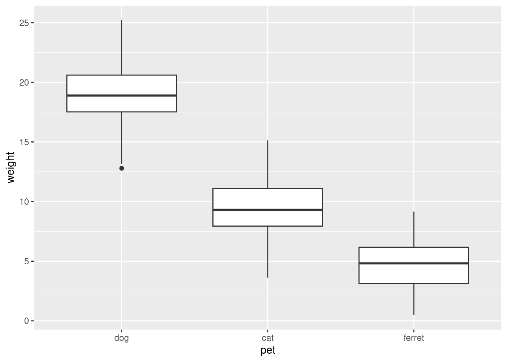
To save the plot to a file to use in your paper, use ggsave to save it in our subfolder for figures:
# save the plot
ggsave('figures/boxplot_pets_weight.png', plot = data.plot, width = 6, height = 4, dpi = 300)figures/ folder.CommitCommit to store a new version of your project, then Close.Push.write_up folder, naming them lesson2_environment.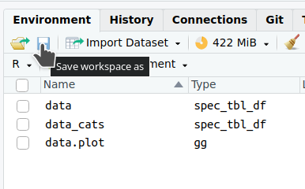
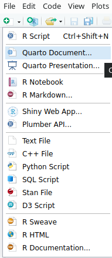
Create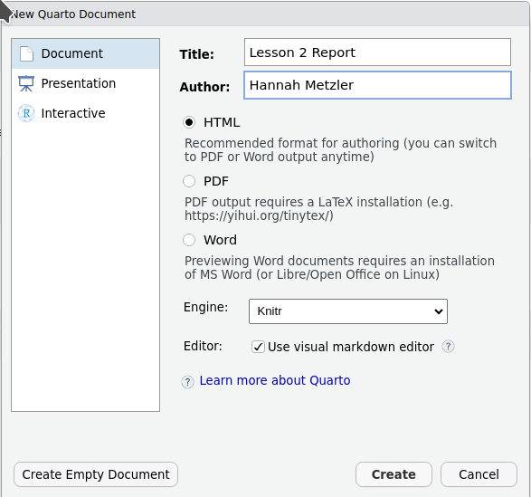
Save the Quarto document in your write_up folder Lesson2_Report
You can see that your R-script ends with .R, the Quarto file with .qmd
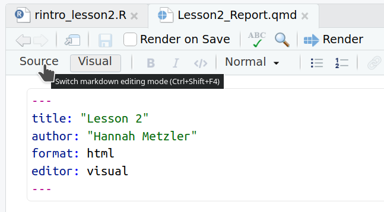
By clicking on Source, you will see the content written in “Markdown” language.
Markdown is
Let’s start writing in our Quarto Document:
Ctrl+Alt+I to insert a code chunk. ```{r} lets R know that the following is code.load("lesson2_environment.RData")# Data
Here is a look at our two data frames. First is the one we read in, the second is our subset with just the cat's data.
# Figure
Here's a figure of the weight of different pets in the dataset.Ctrl+Alt+I to insert them in the right places.
head(data) and head(data_cats) to present your data sets under # Data.data.plot) under # Figure.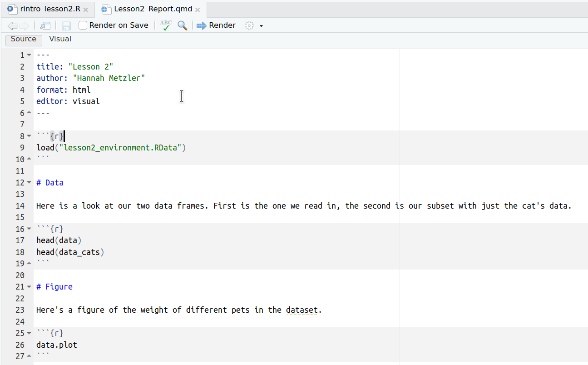
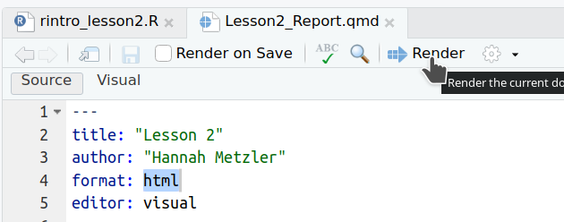
format: docx at the top, then render again as a Word document.You can write a lot of your code directly in Quarto Documents, allowing to combine your results (tables, figures) with interpretations directly in the same document. Lead through your entire analyses step by step. If a step needs a lot of code, move that code to a script in the code folder, and call the script from your Quarto document using the function source(). For example, you could first call a script that cleans the data, then make figures and run statistical tests directly in the Quarto Document.
This lesson is based on:
Page Piccinini, R-Course, Lesson 1: R Basics.
Chapter 2 of: Lisa DeBruine & Dale Barr. (2022). Data Skills for Reproducible Research: (3.0) Zenodo. doi:10.5281/zenodo.6527194.